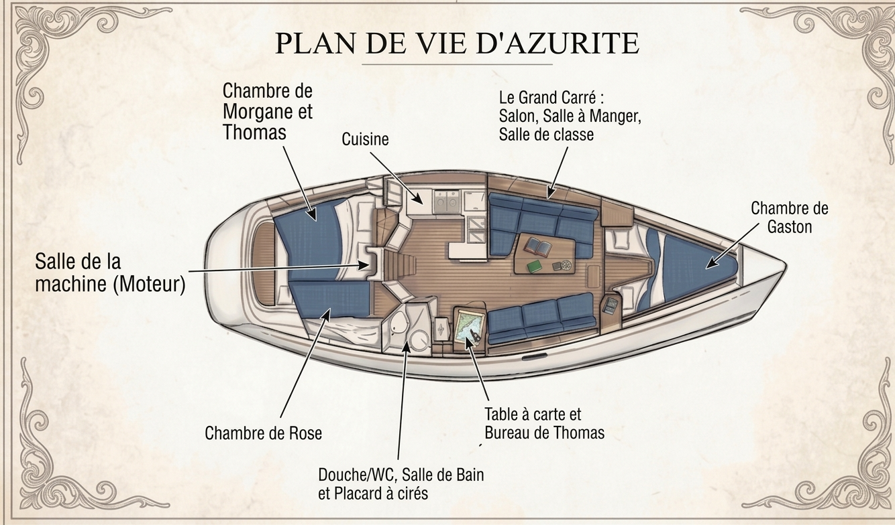

Azurite est un First 375 construit par Bénéteau en 1988, dessiné par l'architecte naval Jean Berret. Le bateau a été immatriculé le 17 juin 1988, exactement deux ans avant la naissance de Thomas, le 17 juin 1990 — Azurite et Thomas sont nés le même jour.
Nous possédons Azurite depuis février 2025. Depuis, nous avons déjà parcouru plus de 1500 milles nautiques ensemble, dont un aller-retour jusqu'à Guernesey cet été, et navigué dans des conditions musclées jusqu'à 35 kts au portant.
Cotes précises (largeur, tirant d'eau exact, déplacement) à confirmer avec les papiers du bord.

Nous avons réalisé nous-mêmes l'essentiel du refit d'Azurite, avec un objectif simple : un bateau fiable et autonome pour sept mois de navigation en famille.
Encore à faire avant le départ : changer la voile d'avant (génois) et réviser notre matériel de survie — c'est justement pour ça qu'on recherche des sponsors.
Voir la page SponsorsDeux cabines, un carré, une cuisine, une table à carte et chaque recoin qui finit par avoir une mission. Pendant sept mois, chaque objet devra mériter sa place.
Notre préparation ne concerne donc pas uniquement la navigation : il faut aussi penser au stockage de nourriture, aux vêtements humides, à l'école des enfants et à la capacité de chacun à trouver un peu de calme.
